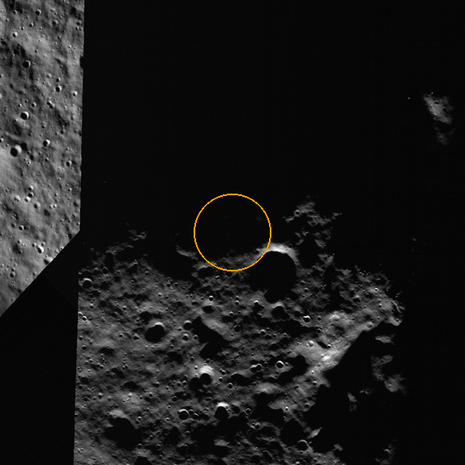

NASA Space Apps 2026: Lunar Landing Site Navigator
Find where and when to land at the lunar south pole
LunarWindow checks every candidate site against the real terrain around it, hour by hour. It shows when the Sun clears the hills for power, when Earth is in view for contact, and whether the lander survives the mission.
Compare sites, dates and mast heights
Candidate sites
Tap a site. Drag to move, use + and − to zoom.
Panel and antenna height (2 m is the best fit to NASA's sunlight map; 5 m and 10 m are design requirements, no lander has flown a mast)
What these words mean
- Skyline
- the horizon the lander sees: how high the hills rise in every direction
- Height (mast)
- how high the solar panels and antenna sit above the ground
- Safe landing day
- a day with at least one landing hour that gives power and direct-to-Earth (DTE) contact at touchdown, Earth in view for half the mission, and a battery that never runs below its reserve
- Within 100 m
- still safe if the lander misses its target by up to 100 m (NASA's landing accuracy), checked at 17 points, each on ground under 10°
- Direct-to-Earth (DTE) contact
- radio straight from the lander to Earth, with no relay satellite. It works only while Earth is above the skyline the lander sees; each stretch of time when it is, from Earthrise to Earthset, is a DTE window.
Play the mission
Direct-to-Earth (DTE) windows during this mission
Solar elevation
The Sun's height (orange) against the terrain in its direction (grey). The gap between them is your power margin.
Failsafe: what if it goes wrong?
Before you commit to this landing: a late landing, a missed target, a weaker battery, and how sure we are. Every line comes from the same pipeline as the verdict above; survival is at best (sun-tracking panels).
Best sites
Compare sites
Add up to four sites with "Add to comparison". Tap a site's name here to play its mission in the player above.
The whole region: is it only one crater?
The Planner tab shows the 400-site demo grid at the Shackleton rim. The same pipeline (same rules, the 100 m check with slopes) ran on all candidate sites within 6° of the pole, 5 km apart. Sites more than 5° from the pole are beyond our convergence study. Survival is at best (sun-tracking panels).
Plan your own mission
Set every parameter by hand: where, when, how high, and the lander's power. The team's Python pipeline runs it in a few seconds (horizon engine on NASA LOLA terrain, NASA SPICE for the Sun and Earth, the battery model) and the result opens in the Planner tab. It needs the local server: python scripts/serve.py.
From terrain to a landing decision
The slow part, every site's skyline, is worked out once. After that, any date is a quick check of "is the Sun above the hills?"
Each step feeds the next; the moving dots show data flowing toward the landing decision.
Skyline
NASA LOLA terrain, 20 m near each site and 240 m out to 250 km, gives the horizon in every direction, including the Moon's curvature.
Sun and Earth
NASA's SPICE toolkit places the Sun and Earth in each site's sky every hour, including the Moon's wobble (libration).
Power and contact
Each hour: how much of the Sun clears the skyline, whether Earth is visible, and the battery level.
Decision
Ranked sites, best landing dates and the shortest antenna or solar mast that keeps the lander alive.
On the Moon vs on Earth
The south pole breaks every daylight habit we have. That's why a few hundred metres or a few days can decide a mission.
The Sun
A day
Shadows
Earth in the sky
Checked against NASA, and against ourselves
Matches NASA's sunlight map
Our skylines reproduce NASA's long-term sunlight map pixel by pixel around Shackleton's rim (correlation 0.92 at a 2 m height, average difference +0.1 points, 94% of pixels within 10 points).
Sun and Earth positions
From NASA's SPICE toolkit, in the same Moon frame as the terrain maps. Checked against NASA JPL Horizons at 124 positions (six named sites, 2026–2030 and the IM-1 and IM-2 landing hours) and against a second library (Skyfield).
Checked on NASA Moon Trek's finer terrain
The Shackleton rim site (site 210, 10 m) gives the same verdict on Moon Trek's 5 m LOLA map, four times finer than ours. Near the pole (site 33) the two maps disagree, and the 5 m map shows a rise 20 m away that our 20 m map smooths out: terrain finer than the map can change the answer. We also found and removed a 210 m spike in that map that would have faked a 4-hour shadow.
Site 210 from orbit

The demo site seen by NASA's Lunar Reconnaissance Orbiter (Narrow Angle Camera mosaic, via NASA Moon Trek), about 1.2 km across; the ring is the 100 m landing-error circle we check. In this picture the ground inside the ring is in shadow, and that agrees with our result: at ground level this spot has no safe landing day in 2026–2030. Panels and antenna 10 m up clear the nearby rim. (The mosaic joins images taken at different times, so the shadows show one moment, and the straight edge on the left is a seam.) Image: NASA/GSFC/Arizona State University.
Terrain and sky line up
A fake Sun placed just behind a test hill comes out hidden, and just above it comes out visible, in all 50 joint tests.
Automated tests
Every part of the pipeline is tested on terrain with known answers before it touches real data.
Honest limits. Battery values follow public information about Intuitive Machines' Nova-C lander, with an estimated load, and assume panels that track the Sun, so survival is an upper bound for fixed panels. NASA doesn't publish the observer height of its map, so the 2 m match is a best fit. Every number on this page comes from the team's pipeline; the page computes nothing itself.